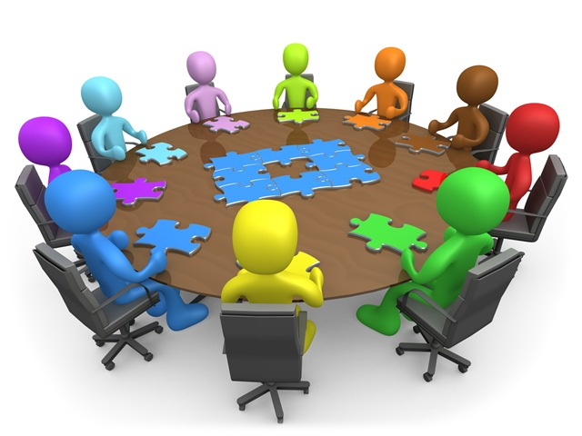

Brandon Williams (crazysix)
What is Jenkins?
Jenkins is an award-winning application that monitors executions of repeated jobs, such as building a software project or jobs run by cron. Among those things, current Jenkins focuses on the following two jobs:
https://wiki.jenkins-ci.org/display/JENKINS/Meet+Jenkins
Jenkins is a simple butler.
Let's dive in!
As mentioned before, the goal of this presentation is to spark a conversation in the community that will lead to a collaborative solution for some of the problems many of us face.
/